MXB103 Project Group 13: BUNGEE!
Contents
- 1 Introduction
- 2 The proposal
- The report will answer the following questions:
- 3 The model
- 3.1 Assumptions and limitations
- 3.2 Parameters
- 4 The numerical method
- 4.1 Parameters
- 4.2 Solution
- 5 Analysis
- 5.1 Timing and bounces
- 5.2 Maximum speed experienced by the jumper
- 5.3 Maximum acceleration experienced by the jumper
- 5.4 Distance travelled by the jumper
- 5.5 Automated camera system
- 5.6 Water touch option
- 6 Conclusion
1 Introduction
As part of Brisbane's "New World City" transformation, the Brisbane City Council is investigating a proposal to allow bungee jumping off the Story Bridge. This report addresses several key questions about the proposal.
In Section 2 of this report, the proposal and the key questions relating to it are discussed in more detail. In Section 3, the model and its equation are discussed in greater detail including where values come as well as outlining assumptions, limitations and the values that shall be used in the model (values for a 80kg person). In Section 4, the model will be formulated and then solved using the numerical method for a second order function. And finally, in Section 5, this report will answer several questions regarding the specifics of the model and what will be expected during the jump.
2 The proposal
The proposal calls for a platform to be installed at the very top of the bridge, from which the bungee jumps will take place. This platform will be at a height H from water level and the model produced will describe how y increases as the jumper falls towards the river.
The report will answer the following questions:
- Implement a second order method to solve numerically
- Plot the jumper's position over time
- Does the model agree with 10 bounces across 60 seconds?
- What is the maximum speed and when does it occur?
- What is the maximum acceleration?
- Find how far the jumper travels within 60 seconds
- What delay should the camera at deck height be set to?
- What properties of the bungee rope could be changed to experience a 'Water Touch'?
The approach taken for these questions has been outlined in Section 1 and will use the model described below.
3 The model
The equation of motion for bungee jumping is
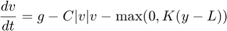
Write a paragraph or two about the equation, including where it comes from and what the symbols mean.
3.1 Assumptions and limitations
Write a paragraph on the assumptions and limitations on the model, and a paragraph on the limitations on the study you have conducted.
3.2 Parameters
H = 74; % Height of jump point (m) D = 31; % Deck height (m) c = 0.9; % Drag coefficient (kg/m) m = 80; % Mass of the jumper (kg) L = 25; % Length of bungee cord (m) k = 90; % Spring constant of bungee cord (N/m) g = 9.8; % Gravitational acceleration (m/s^2) C = c/m; % Scaled drag coefficient K = k/m; % Scaled spring constant
4 The numerical method
The model itself, is too complicated to solve analytically. So, numerical methods will be used to find solutions. Since the model involves two (2) unknowns, v and y, a second equation is needed that relates the two equations. This relationship is simply that the jumper's velocity (v) is the derivative of the jumper's position (y). Hence, for numerical purposes, we can think of this problem as two ODEs:
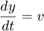
4.1 Parameters
T = 60; % Final time in simulation (s) n = 10000; % Number of subintervals (you decide how many you need)
4.2 Solution
The ordinary differential equations are solved using Euler's Method.
[t_e, y_e, v_e, h_e] = euler_bungee(T, n, g, C, K, L);
The Second Order Differential equations are solved using Modified Euler's Method.
f = @(t,y,v) g - C*abs(v).*v - max(0, K.*(y - L)); [t_mode, y_mode, v_mode, h_mode] = modeuler_bungee(T, n, g, C, K, L, f);
figure(1) plot(t_e, y_e); xlabel('time (s)'); ylabel('distance fallen (m)'); title("Figure 1: Euler's Method for Jump position"); figure(2) plot(t_mode, y_mode); xlabel('time (s)'); ylabel('distance fallen (m)'); title("Figure 2: Modified Euler's Method for Jump position");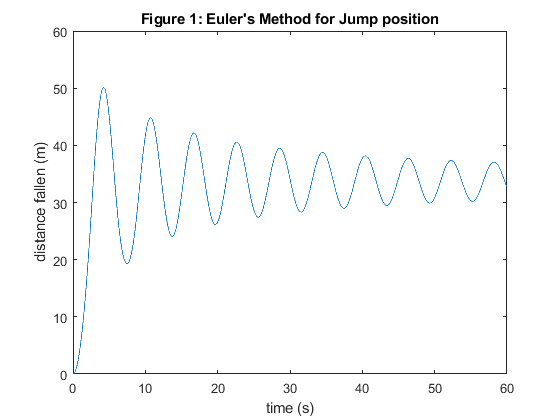 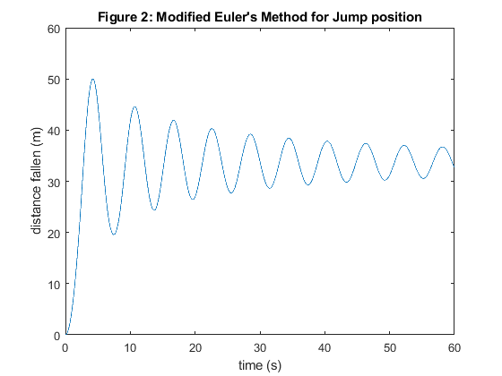
5 Analysis
In this section, the model predictions are analysed with respect to the key questions being asked about the proposal.
5.1 Timing and bounces
Describe the question, and then answer it. In this case, you will refer to Figure 1 of 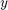 versus 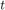.
5.2 Maximum speed experienced by the jumper
Describe the question, and then answer it. In this case, you will create a figure of 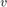 versus and refer to it to answer the question.
5.3 Maximum acceleration experienced by the jumper
Describe the question, and then answer it. In this case, you will call a function to numerically differentiate to find 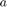. Then plot versus and refer to it to answer the question.
5.4 Distance travelled by the jumper
Describe the question, and then answer it. In this case, you will call a function to numerically integrate 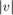 to find the distance.
5.5 Automated camera system
Describe the question, and then answer it. In this case, you will fit an interpolating polynomial through the four points in your solution that lie either side of the camera location. Then use that polynomial to solve for when the jumper passes the camera.
5.6 Water touch option
Describe the question, and then answer it. In this case, you will re-solve the equations with different parameters for 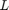 and 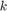. Experiment to find which values work best for the water touch option, but include only the best combination that you found in the submitted code.
6 Conclusion
Conclude your report by summing up your findings and making any recommendations.